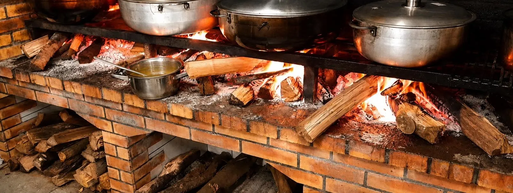
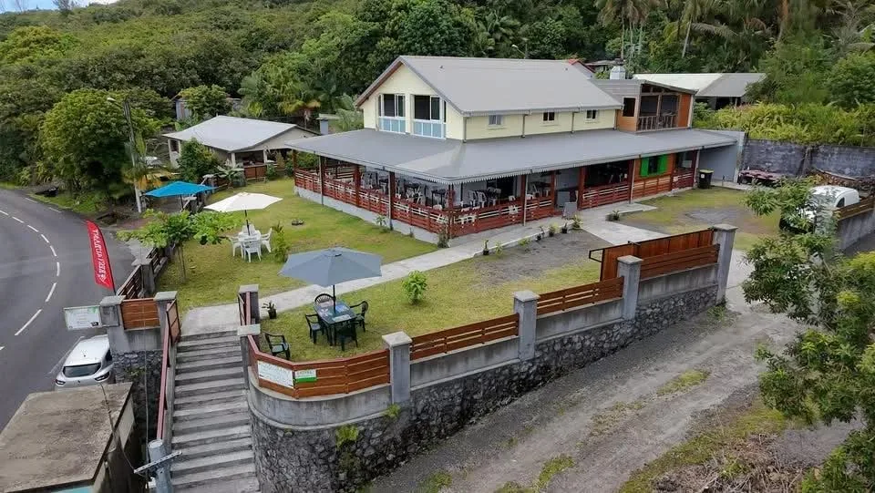
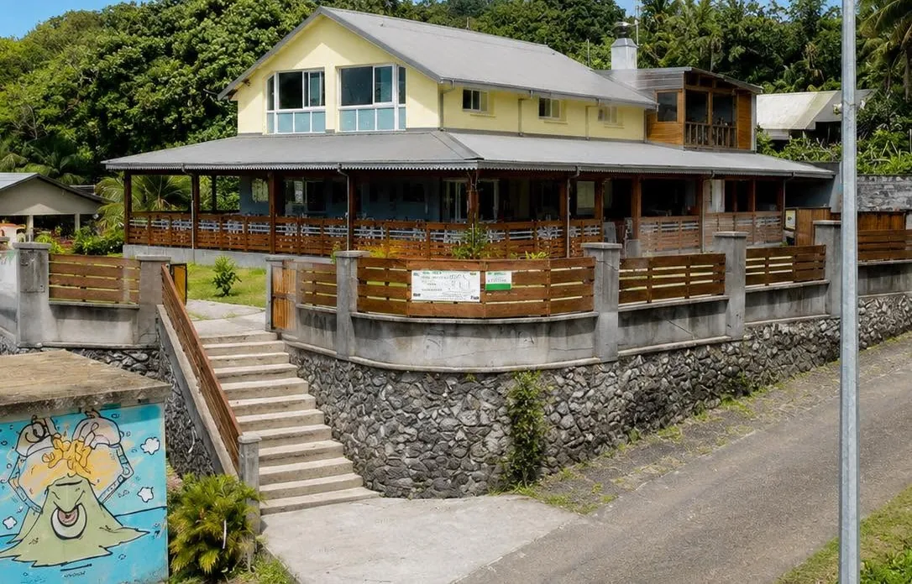
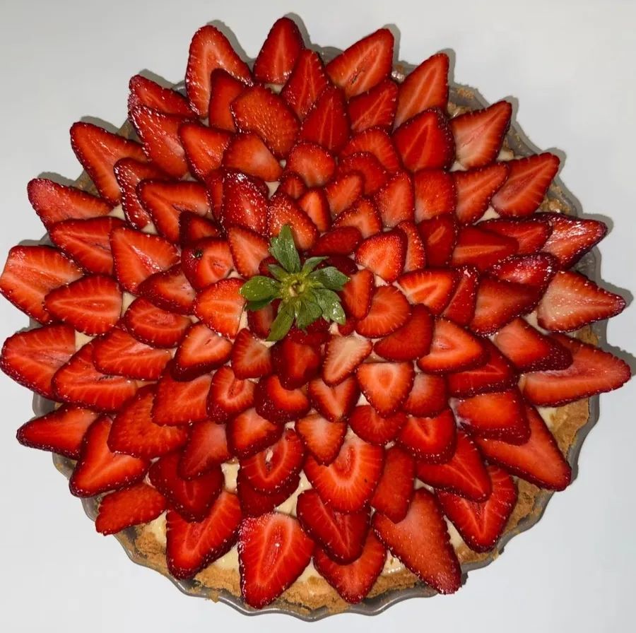
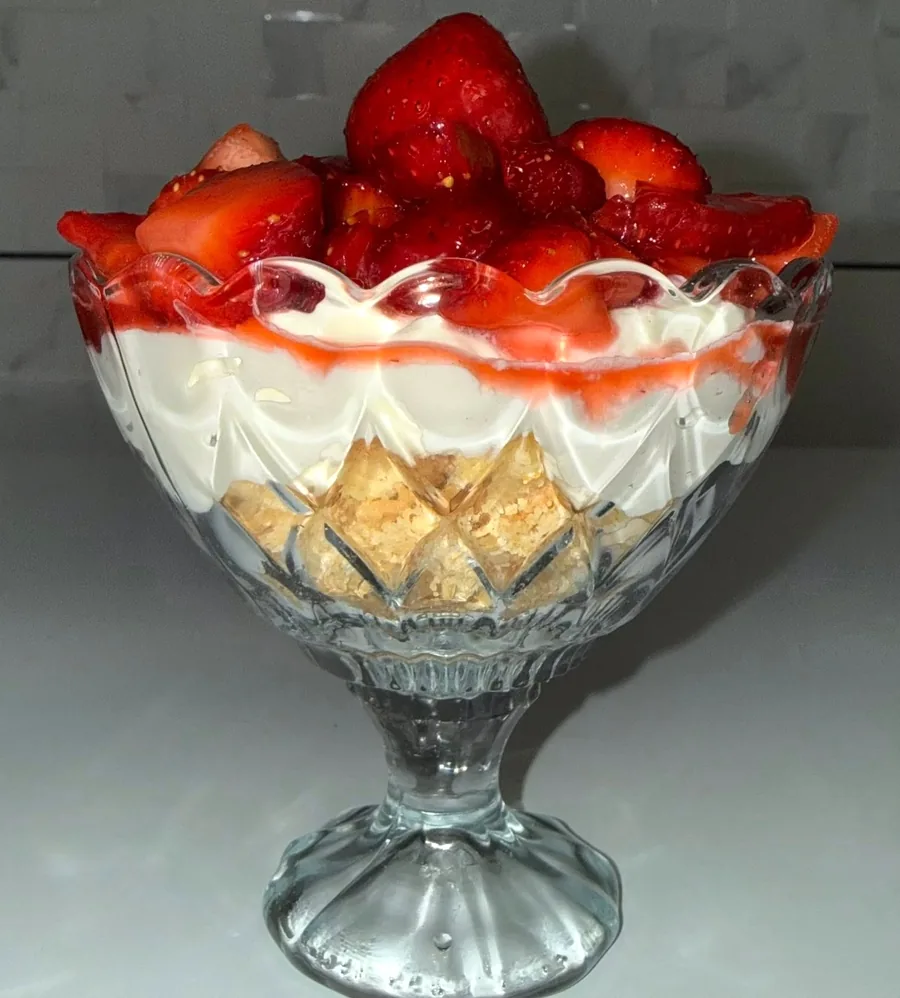

Le Tremblet · Saint-Philippe · La Réunion
RestaurantLe Ti Récif
Cuisine créole traditionnelle au feu de bois, service à la carte et à l’assiette, dans une ambiance lontan et un cadre nature du Sud Sauvage.
2 A Impasse Palmiste, Le Tremblet, 97442 Saint-Philippe
Notre cuisine
Tout mijote sur le feu de bois
Bienvenue au restaurant Le Ti Récif, cuisine créole traditionnelle au feu de bois. Sur le grand foyer en briques, les marmites chauffent doucement au-dessus des braises : civets, carrys, rougails et massalés prennent le temps qu’il faut.
On vient partager un bon repas en famille ou entre amis, au Tremblet, à Saint-Philippe. Au plaisir de vous accueillir !
« Quand la marmite finit vide, c’est qu’le cari tié bon. »
Le Ti Récif, à propos de son porc palmiste au feu de bois
sur Facebook (16 avis)
la page
Le lieu
Un cadre verdoyant et spacieux
Au bord de la route du Tremblet, la grande case jaune et sa varangue en bois accueillent les tables, avec la pelouse, les parasols et la verdure du Sud Sauvage tout autour.


Côté douceurs
Une touche de fraise
Des douceurs partagées sur notre page : une tarte aux fraises en rosace et des verrines généreuses, crème et fraises fraîches.


Faites glisser pour découvrir la verrine →
Pour Noël
Offrez un repas au feu de bois
Pour les fêtes, réunissez la famille autour d’une bonne table créole au Tremblet, ou faites plaisir à vos proches avec un repas au Ti Récif.
Venir au Ti Récif
On vous attend au Tremblet
- Adresse2 A Impasse Palmiste, Le Tremblet
97442 Saint-Philippe, La Réunion - Réservations0693 61 81 00
- Jours d’ouvertureAnnoncés sur notre page Facebook · réservation conseillée
Suivez-nous : Facebook · Instagram · Tripadvisor